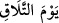
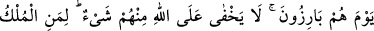
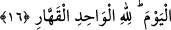
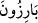
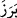

vahyetmekle memur olup, yaptığı yapmadığı her şeyde vahy ile mükellef bulunan kişiye
gönderilir. Dolayısıyla bu “emr”den maksad, “şan” anlamında olan değildir. İkinci bir
ihtimal olarak da râhun hali olabilir. Yâni “Allah’ın emrinden neş’et ettiği ve oradan
geldiği halde râhu, yâni vahyi indirir” demektir. “Kullarından dilediğine” ki elçilik
görevini yapması ve ilâhî hükümleri tebliğ etmesi için Allah’ın seçtiği kimsedir.
Dahhâk der ki: Bu âyette bahsedilen ruh Cebrâil (a.s.) olup mânâ şöyledir: “Allah
onu emrinden olan şeylerle dilediğine gönderir ve Hz. Muhammed (s.a.)’in
peygamberliğini kerih görenlere bununla hitâb edilir.
et-Te’vîlât-Necmiyye’ye der ki: Allah müminlere dirâyet ruhunu, âriflere velilik
rûhunu, peygamberlere de nübüvvet rûhunu gönderir. Ayrıca âyette, nübüvvetin kesbî
bir şey değil, Allah vergisi vehbî olduğuna dâir delil vardır. Gerçekte velilik de
böyledir. Çünkü velâyet de hâricî sebeplere dayanmaz. Aksine o da ilâhî bir ihtisasa,
Allah’ın husûsî seçimine dayanır.
“Kavuşma gününü ihtar etmek için...” ifadesi, vahyin niçin indirildiğini
göstermektedir. Yani, Allah Teâlâ’nın yahut kendisine vahyedilen zatın veya Ruh’un
inzâr etmesi için. “İnzâr”, korkutarak yapılan tebliğ dâvetidir.
“
” ifâdesi ya ikinci mef’ûlün zarfı olarak ibare, “insanları kavuşma günü olan
kıyâmet günündeki azaptan korkutmak için” demektir. Ya da bizzat kendisi mecâzen veya
asâleten ikinci mef’uldür. Zira bu günün bizzat kendisi, şiddet ve dehşetinden dolayı
inzâr ve ihtâr edilmeye lâyıktır. Kıyâmet gününe “kavuşma günü” denmesinin sebebi, o
gün ruhların bedenlerle, göktekilerin yerdekilerle, kulluk edenlerin kulluk ettikleriyle,
amel sahiplerinin amelleriyle, ilk baştakilerin en son gelenlerle, zâlimlerin
mazlumlarla, cehennemliklerin de zebânîlerle karşılaştıkları gündür.
16. O gün onlar (kabirlerinden) meydana çıkarlar. Onların hiçbir şeyi Allah’a
gizli kalmaz. Bugün hükümranlık kimindir? Kahhâr olan tek Allah’ındır.
“O gün” ifadesi bir önce âyette yer alan “kavuşma günü”nden bedeldir. “
”
kelimesi, “fezâya, ortaya çıktı” anlamındaki “ ” kökünden gelir. Ayrıca “berize” gibi
gizlilikten sonra zâhir ve âşikâr oldu anlamı da vardır. Mânâ şöyledir: Hani
kabirlerinden çıkacakları gün, ya da o zaman kendilerini gizleyip örtecek dağ, tepe, binâ
ve benzeri hiçbir şey olmadığı için apaçık ortada olacakları gün... Zira o gün arz
dümdüz olacak ve insanlar üzerlerinde giysi olmaksızın çırılçıplak bulunacaklardır.
Bir hadiste şöyle buyrulur: “İnsanlar o gün yalınayak (hufât), çıplak (‘urât) ve